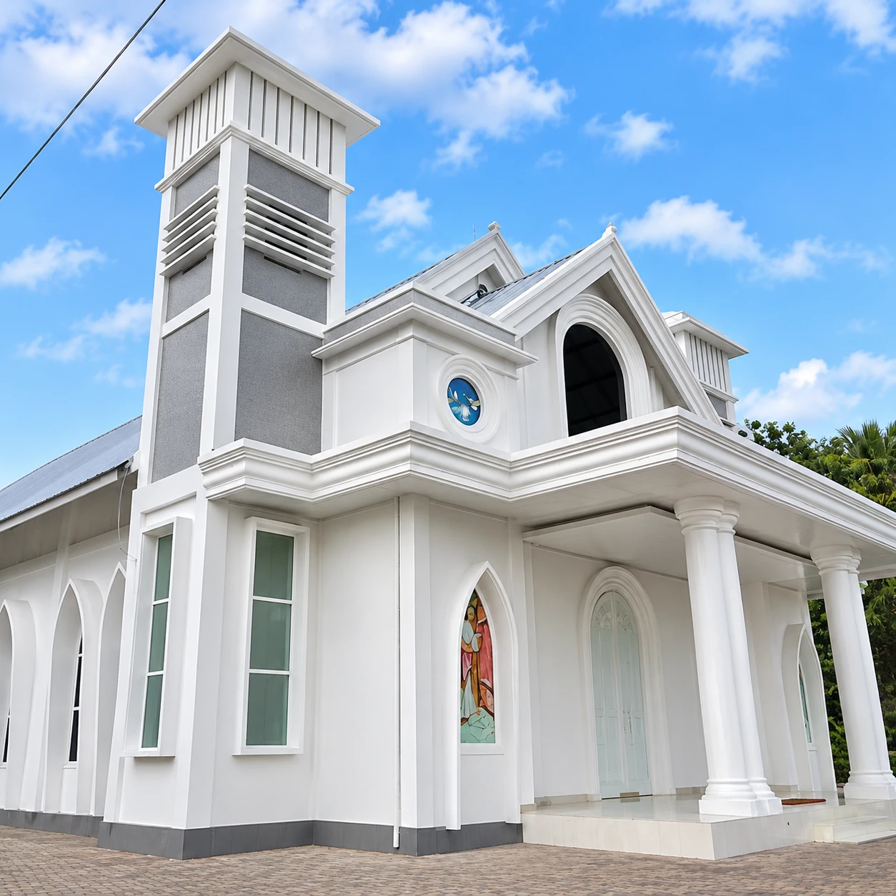

Portal jemaat GMIT Lahairoi Tuak Sabu, Lasiana — jadwal ibadah lima rayon, warta mingguan, pendaftaran sakramen, dan persembahan dalam satu tempat.
Lihat jadwal minggu ini →Kebaktian Minggu pukul 06.00 dan 08.30 WITA di Gedung Gereja Lahairoi, lalu ibadah rumah tangga di lima rayon. Pilih rayon Anda untuk melihat jadwalnya.
Urusan jemaat hari ini tersebar: grup WhatsApp → formulir kertas → antre di kantor Tata Usaha → telepon pendeta rayon → kembali lagi. Setiap pindah tempat, satu langkah hilang.
Portal Lahairoi menyatukan jadwal, warta, sakramen, dan persembahan dalam satu alur.
Berkas tercecer. Antre berulang. Kabar terlambat.
Satu nomor berkas. Satu alur. Satu kabar.
Renungan, pengumuman nikah dan duka, serta jadwal petugas, terbit tiap Minggu pagi sebagai PDF.
Baptisan Kudus, Peneguhan Sidi, dan Pernikahan Kudus didaftarkan daring tanpa login, dipantau dengan nomor berkas.
Satu kode untuk tiga pos (operasional, pembangunan, diakonia); bukti dikirim ke Bendahara Jemaat.
| LAYANAN | CARA LAMA | PORTAL LAHAIROI |
|---|---|---|
| Jadwal rayon | Tanya di grup WhatsApp | Pilih rayon, lihat minggu ini |
| Warta jemaat | Lembar cetak di gereja | PDF tiap Minggu pagi |
| Pendaftaran baptisan | Datang ke kantor Tata Usaha | Daring, tanpa login |
| Lacak berkas | Telepon sekretariat | Nomor berkas, status langsung |
| Persembahan | Amplop dan transfer manual | QRIS satu kode, tiga pos |
Pengalaman warga jemaat dari lima rayon menggunakan portal.
“Pendaftaran baptisan anak kami selesai dari rumah. Aktanya kami terima tepat pada hari pelayanan.”
“Jadwal ibadah rumah tangga rayon kami sekarang jelas, tidak lagi menunggu kabar di grup.”
“Persembahan lewat QRIS langsung tercatat di pos yang benar dan muncul di warta minggu berikutnya.”